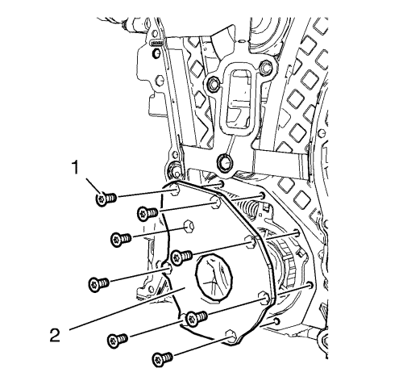
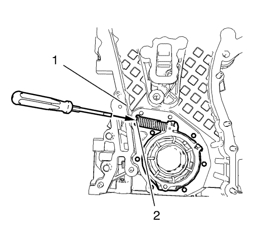
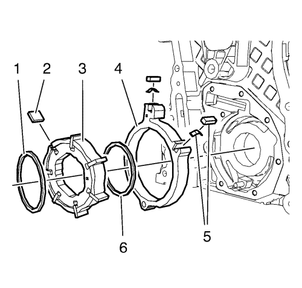

- Retire los 8 tornillos de la tapa de la bomba de aceite (1).
- Retire la tapa de la bomba de aceite (2).

Advertencia: Antes de desmontar el muelle, tápelo con un trapo para evitar que salga expulsado y provoque daños materiales o personales.
Nota: Coloque un destornillador entre el bobinado del muelle de la corredera de la bomba de aceite (2).
- Proteja el borde de la cubierta delantera del motor (1) con una pieza de plástico adecuada.
- Comprima el muelle de la corredera de la bomba de aceite con un destornillador y desmonte el muelle junto con el pasador.

Nota: Observe la posición de montaje de los componentes de la bomba de aceite.
- Desmonte los componentes de la bomba de aceite en el siguiente orden:
| 5.1. | Aro exterior del álabe de la bomba de aceite (1). |
| 5.2. | Rotor de álabes de la bomba de aceite (3) y 7 álabes (2). |
| 5.3. | Aro interior del álabe de la bomba de aceite (6). |
| 5.4. | Corredera de la bomba de aceite (4) y 2 juntas de corredera de bomba de aceite con 2 muelles de junta de corredera de bomba de aceite (5). |